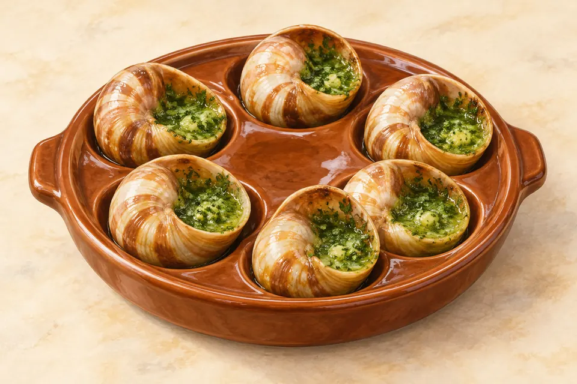
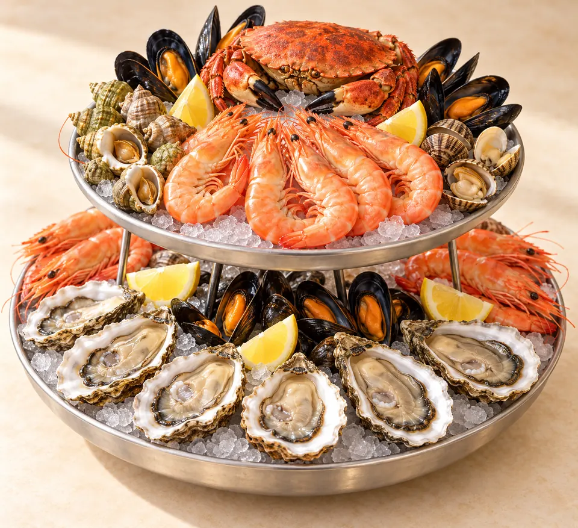
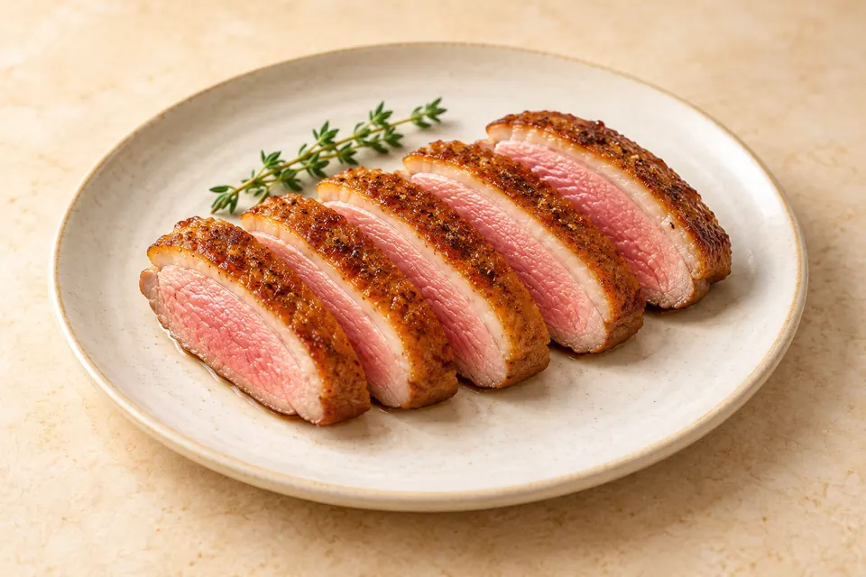

01 · A dish from the land
Little snails
🇫🇷 EscargotsThese are snails. A classic way to serve them is in their shells with butter, garlic and parsley.
🧈 Butter🧄 Garlic🌿 Parsley
Can you count the six shells in the picture?
A meal to remember
We tried three French dishes together. Can you name them from the pictures?



01 · A dish from the land
These are snails. A classic way to serve them is in their shells with butter, garlic and parsley.
02 · A dish from the sea
A platter can bring many kinds of shellfish together. Prawns, oysters and crabs are examples; each platter can be different.
03 · A dish from a bird
Magret means duck breast. Cooking the skin in a pan can make it golden and crisp.
04 · Compare the dishes
The three foods came from different places. Follow each picture to its source.
→ Land snail
A shell on land.
→ Sea
Many kinds together.
→ Bird
Cooked in a pan.
05 · Our food memory
Pick one to remember. There is no wrong answer.
Tap a dish to save your favourite on this device.